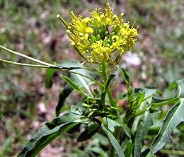

[Khakshir (Persian); Sisymbrium irio]
Caution: This is NOT the "Teff" from which Injera bread is made in Ethiopia and Eritrea, even though it looks a lot like it. This one is a Mustard Seed, not a Grain, and is used in Persia (Iran) and Afghanistan in the making of Sharbat-e Khakshir, a refreshing cold soft drink, and as a medicinal. The dried leaves are used by the Bedouin as a Tobacco substitute. It got the name "London Rocket" because it grew so prolifically after the Great London Fire, and was also found around bomb craters during the Blitz. The tiny seeds are about 0.01 inch wide (0.25 mm) and about 0.015 inches long (0.38 mm).
More on Mustard Seeds & Oils.
 This plant is now a naturalized invasive in California, particularly in the southern third. It is easy to recognize by its yellow flowers, low growth (to 18 inches) and extremely long thin seed pods (to the left in photo). It blooms from June to August, and seeds are ripe between July and September. Photo by ZooFari distributed under license Creative Commons Attribution-ShareAlike v3.0 Unported.